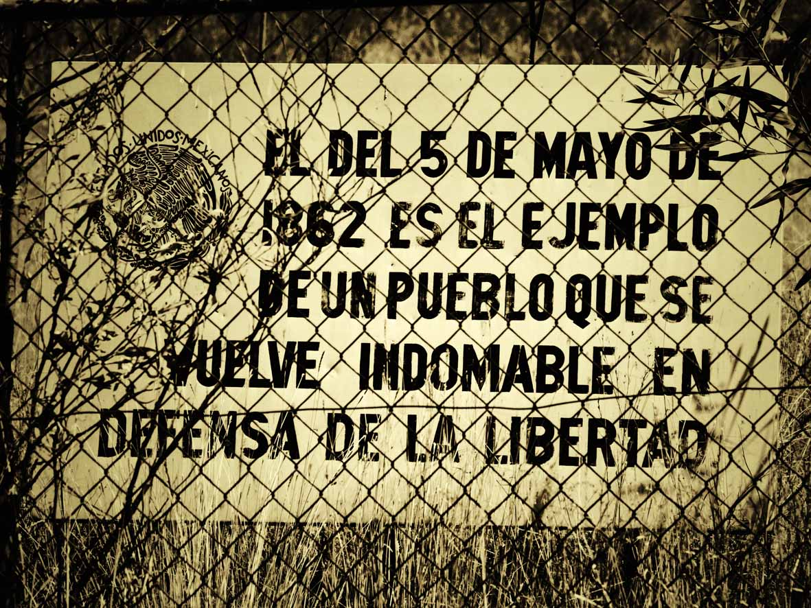

Las tropas francesas estaban muy bien equipadas y eran mucho más grandes que el ejercito Mexicano; por lo que Benito Juárez convocó a toda la población a que luchara, así se formó un ejército de aproximadamente 4800 hombres.
Fue el 5 de Mayo de 1862 cuando el General Laurencez al mando de las tropas francesas ordenó el asalto a los fuertes de Loreto y Guadalupe, que defendían la ciudad de Puebla al mando del General Ignacio Zaragoza; el ejercito invasor que fue rechazado con grandes pérdidas al intentar repetidas veces tomar las fortificaciones, al final tuvieron que abandonar el campo y retirarse vencidos y perseguidos por la caballería mexicana.Finalmente, el ejército francés fue derrotado y el general Ignacio Zaragoza, mandó un mensaje telegráfico al presidente Juárez, que decía “Las armas nacionales se han cubierto de gloria.La Batalla de Puebla simboliza el espíritu de lucha y el amor a la independencia que caracteriza el pueblo mexicano. Actualmente éste día se celebra realizando ceremonias cívicas, en muchas ciudades se realizan desfiles. y también es costumbre representar la lucha de ése día con gente personificada tanto de mexicanos como franceses.




 1
1 4
4